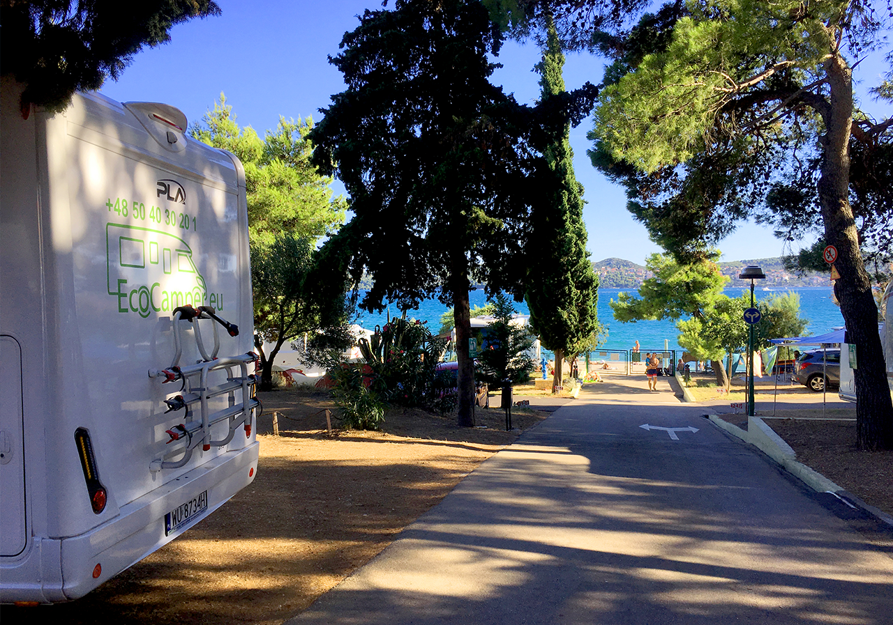
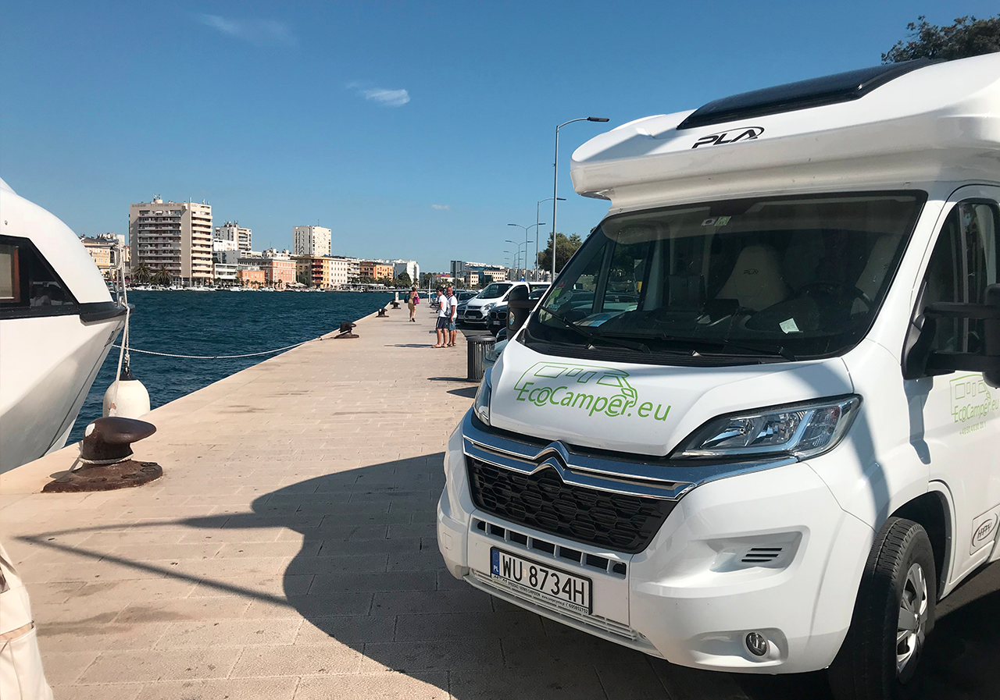
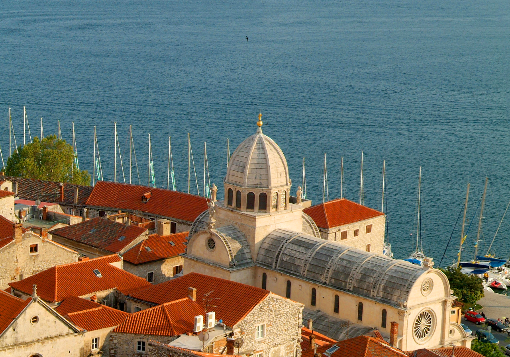
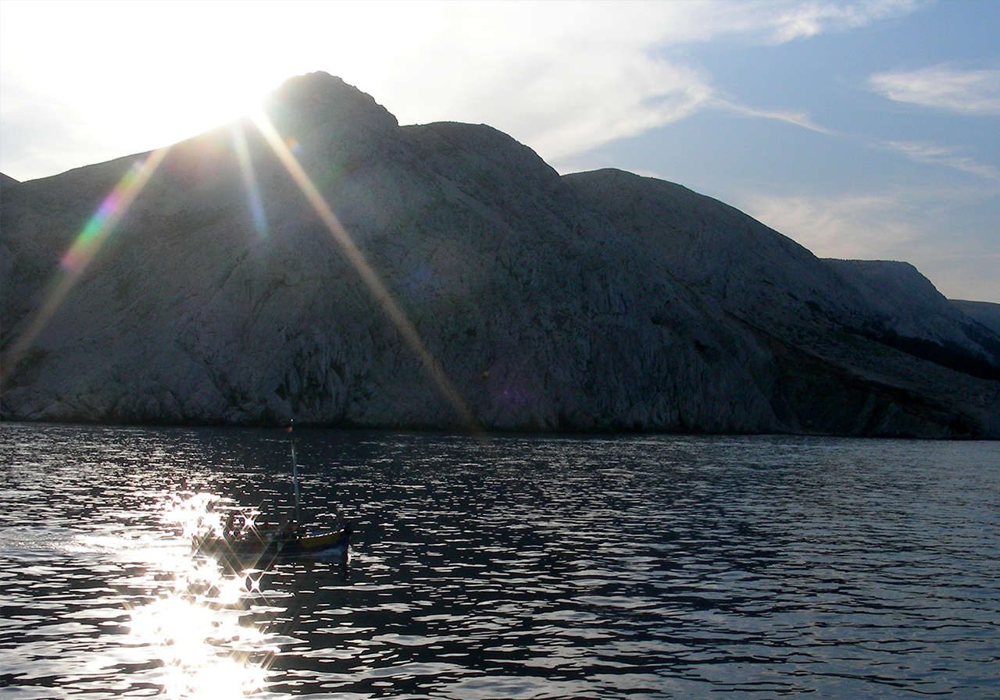

Dostępna praktycznie przez cały rok, temperatura powietrza w trakcie roku nie spada poniżej 10 stopni. Jadąc z Polski polecamy zahaczyć o Parki Narodowe Jeziora Plitwickie i Wodospady Krka –kaskadowo piętrzące się wśród bujnej roślinności - istny cud natury. Jeśli nie chcesz wjeżdżać w głąb kraju warto zobaczyć Półwysep Istria z miastem Pula i Amfiteatrem z wapienia, datowanym na II wiek p.n.e. Stosunkowo blisko jest również miejscowość Baśka, położona na wyspie Krk, w górach , z piętrząca się starówką i knajpkami ciągnącymi się wzdłuż nabrzeża, stanowi wyjątkowo malownicze miejsce. Północna Chorwacja oferuje kilka naprawdę porządnych Campingów. Podążając w dół riwiery chorwackiej ( 2 tyś km wybrzeża), czeka nas 1200 wysp a 66 zamieszkałych. Niektóre z nich dostępne są z lądu – mostami, inne promami. Warto zobaczyć Brać, Hvar, Rab, praktycznie bezludny archipelag Kornati niedaleko Zadaru (składa się na niego ok 150 wysp).

My dotarliśmy na wyspę Pag. Duży Camping położony jest w piniowym lesie, tuż przy żwirowo – piaszczystej plaży w okolicy miejscowości Novalija, około 60 km od Zadaru. Woda morska jest tu naprawdę nieskazitelnie czysta. Na terenie Campingu jest restauracja serwująca pysznie przyrządzoną jagnięcinę. Na miejscu jest również duży supermarket, nie trzeba robić zakupów wcześniej. Infrastruktura sportowa jest tu imponująca: kilkanaście kortów tenisowych, pola do mini golfa, siatkówki , piłki nożnej wypożyczalnie skuterów wodnych i łodzi, fitness i naprawdę nie wszystko udało nam się wymienić. Właściwie można nie opuszczać tego miejsca, zapadasz tu w sielsko–anielską, śródziemnomorską błogość bytu. Po przebudzeniu z letargu można wybrać się do Zadaru by choćby wsłuchać się w dźwięk organów, które wbudowane są przy nabrzeżu promowym i wydają dźwięk gdy nadchodzi fala, popijając słynący z tego miejsca likier wiśniowy Maraschino.

Około 1,5 godziny drogą na południe dojedziemy do Trogiru, po drodze warto zawinąć do Szybenika, najstarszego słowiańskiego miasta w Chorwacji niejednokrotnie spotkaliśmy się z opinią, wśród turystów często odwiedzających Chorwacje, że Szybenik to najpiękniejsze miasto Chorwacji i ,że nie trzeba jechać aż do Dubrownika. Coś w tym musi być skoro miasto to wpisane jest do dziedzictwa światowego Unesco.

Trogir to dość spore miasto portowe , z urokliwą starówką i bulwarem wysadzanym okazałymi palmami, dziesiątkami knajpek i miejscowych sklepików z pamiątkami. Atrakcją jest tu most podnoszony łączący miasto z wyspą Ciovo.

Albania, Czarnogóra i Serbia- to kolejne miejsca o które można rozszerzyć pobyt – są stąd na wyciagnięcie ręki.